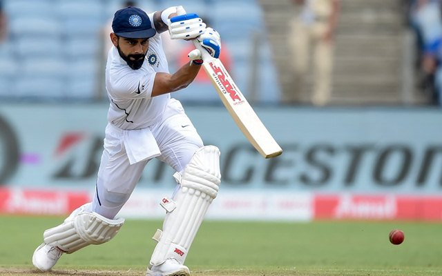

Virat Kohli - The Greatest of All Time !
Home
Merchandise
Collections
Statistics
Statistics of Virat Kohli
Year
Matches
Runs
Average
Strike Rate
100s
50s
2016
10
973
81.08
152.03
4
7
2017
15
1490
82.22
99.47
6
8
2018
13
2185
82.88
99.20
6
9
2019
11
1202
67.88
92.24
3
7